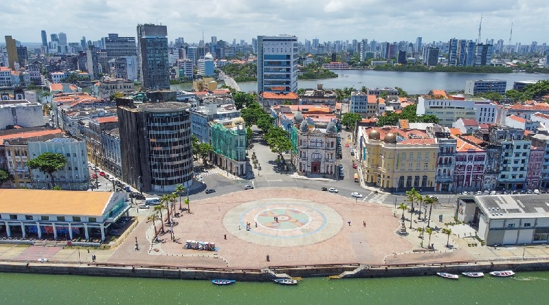

Marco Zero
O Marco Zero está localizado no Bairro do Recife e é o ponto inicial das estradas de Pernambuco.

O Marco Zero é um dos pontos turísticos mais emblemáticos da cidade do Recife. É aqui que a cidade começou e, por isso, o local é considerado o coração da capital pernambucana.
Além da importância histórica, o Marco Zero é um local de encontro para eventos culturais e sociais, sendo palco para shows, feiras e outras atividades.